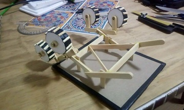
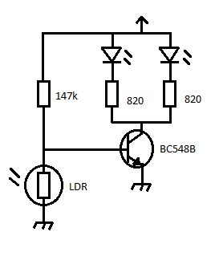
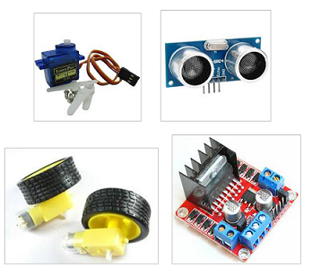
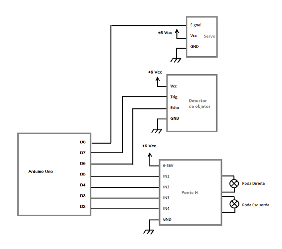
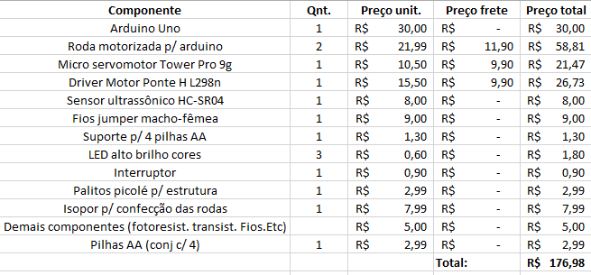

Estrutura
A estrutura mecânica foi montada utilizando palitos de madeira (picolé e churrasco)
e uma placa de papelão que acomoda a eletrônica do rover. As rodas passivas foram
confeccionadas utilizando isopor, fita isolante, palitos de madeira e tiras de tubo de caneta.


Faróis
A fonte de alimentação do robô é composta pelo arranjo de pilhas (6V) e interruptor.
Foram acoplados dois LEDs de alto brilho branco como faróis dianteiros, cuja intensidade
do brilho é inversamente proporcional à luminosidade do ambiente. Para isso foi utilizado
um circuito de controle a transistor bipolar com um LDR.
Sensores e Atuadores
Foi utilizado um par de rodas motorizadas, que contêm um motor DC e caixa de redução.
O analisador de ambiente é composto de um servo-motor de 180 graus modelo Tower Pro 9g
e um detector de ultrassom modelo HC-SR04. O detector de ultrassom foi acoplado ao servo
através de uma estrutura de madeira, e foi colocado um LED de alto brilho vermelho na
direção do detector, para indicar sua posição. As duas rodas motorizadas são controladas
por um circuito ponte H modelo L298N, alimentado com +5V. O módulo ponte H é controlado pelo Arduino.

Esquemático completo

Orçamento
